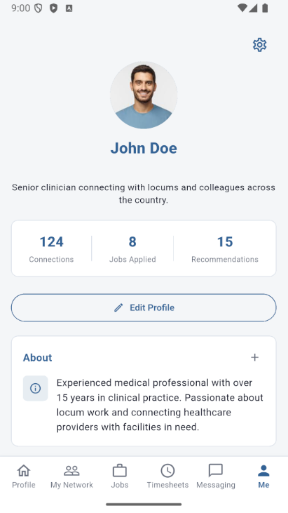
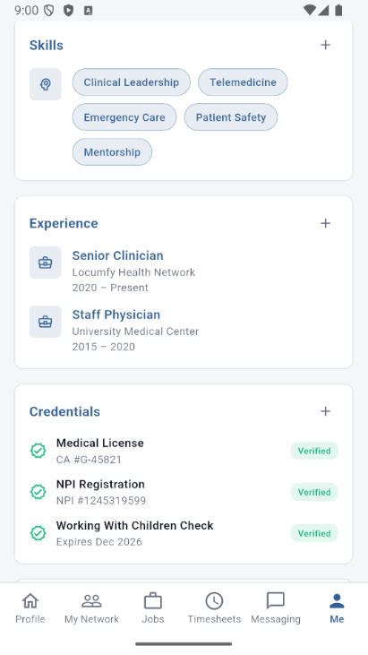
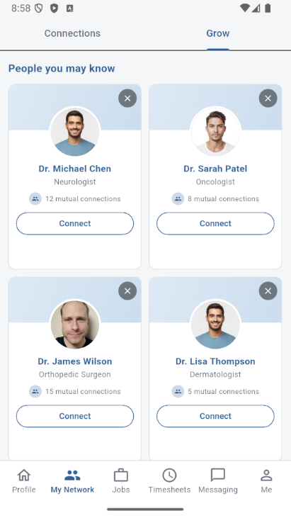
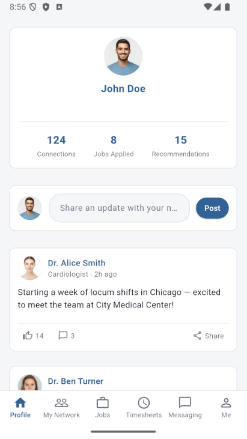
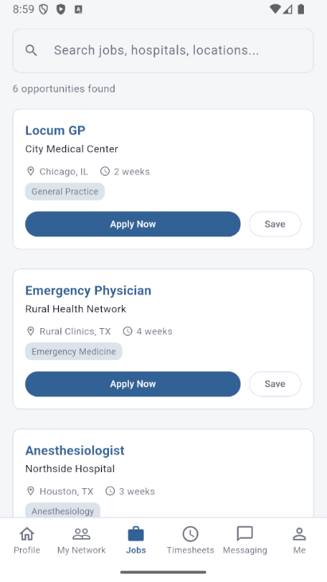
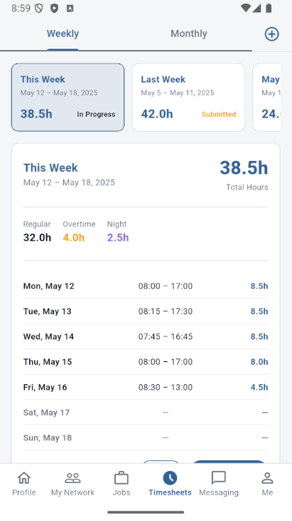
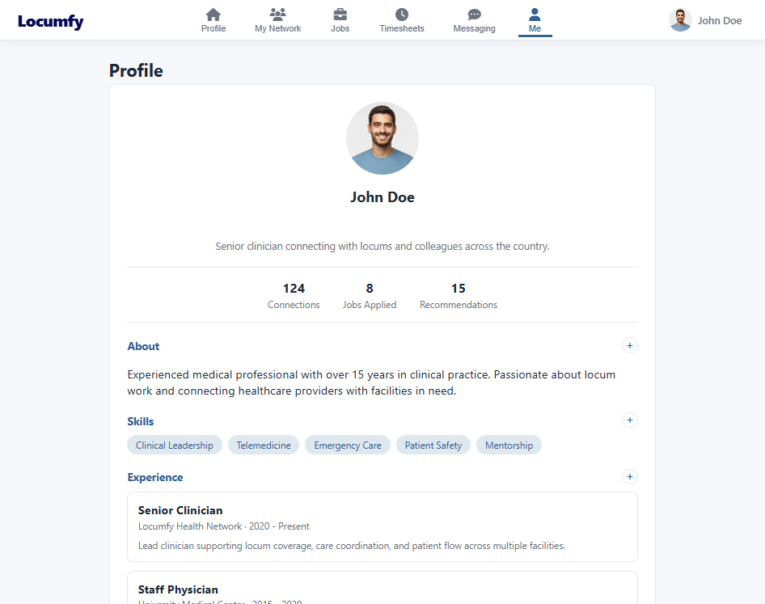
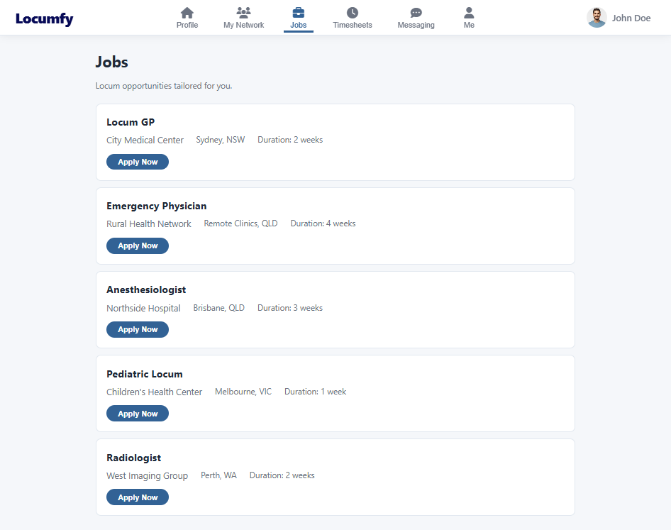
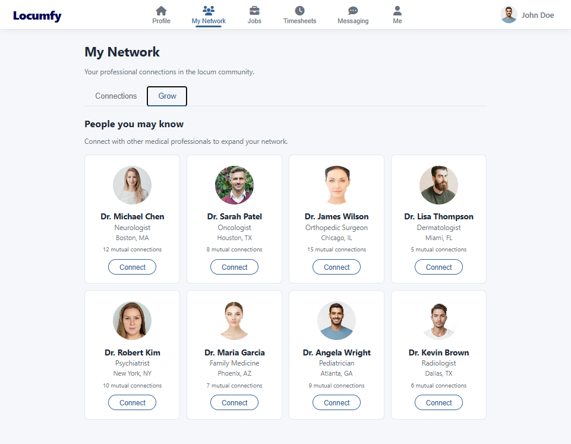
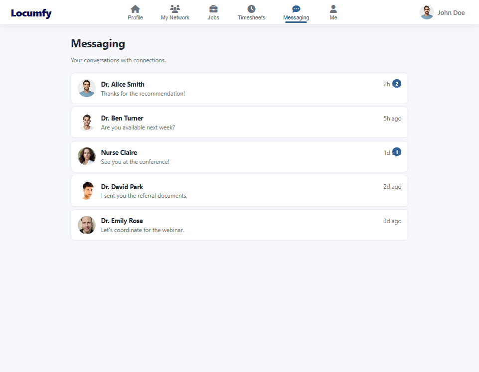

Nurses, therapists, physicians, advanced practitioners and allied health professionals use Locumfy to hold a verified professional profile, stay connected to the people they work alongside, find their next assignment, and record the hours they work.

A general professional network was never built for a licence number, a residency, or a state-by-state practice history. Locumfy captures all of it as structured, searchable detail.

Because Locumfy understands where clinicians trained, where they have worked, and what they specialise in, it can suggest connections that make sense — and a feed worth returning to.
The colleagues, mentors and peers you have explicitly linked with, in one list you control.
Requests waiting on you, kept separate from your established network so nothing gets lost.
Suggested professionals drawn from shared employers, schools, specialties and geography — with the mutual connections shown.



Roles are surfaced against your specialty, your licences and the states you want to work in. Each listing carries the facility, the location, the duration and the clinical requirements, so you can judge fit before you apply.
Conversations with facilities, recruiters and colleagues happen inside the platform, tied to the same verified identities as everything else. When an assignment starts, the timesheet for it is already waiting.

Every professional feature is available in the browser as well as on the phone. Both are built against the same interface, so your profile, network, applications and hours are identical wherever you open them.



